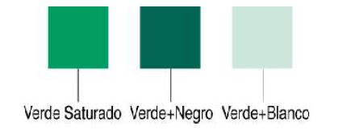

|  | Empezaremos diciendo que el color en sí no existe, no es una característica del objeto, es más bien una apreciación subjetiva nuestra. Por tanto, podemos definirlo como, una sensación que se produce en respuesta a la estimulación del ojo y de sus mecanismos nerviosos, por la energía luminosa de ciertas longitudes de onda. |
Empezaremos diciendo que el color en sí no existe, no es una característica del objeto, es más bien una apreciación subjetiva nuestra. Por tanto, podemos definirlo como, una sensación que se produce en respuesta a la estimulación del ojo y de sus mecanismos nerviosos,por la energía luminosa de ciertas longitudes de onda. |
ResumenEste artículo relata la importancia de la auditoría forense a través de la historia desde que se creó la primera ley en Mesopotamia. También muestra los crímenes corporativos que dieron origen a esta ciencia como rama de la contaduría. Del mismo modo, se identifican los casos que incidieron en la creación de leyes para combatir los fraudes como la ley Sarvanes Oxley en Estados Unidos y el Estatuto Anticorrupción en Colombia. De igual forma, se relacionan algunas de las características más relevantes y el campo de acción de esta rama de la auditoría. |
|
|
|
Empezaremos diciendo que el color en sí no existe, no es una característica del objeto, es más bien una apreciación subjetiva nuestra. Por tanto, podemos definirlo como, una sensación que se produce en respuesta a la estimulación del ojo y de sus mecanismos nerviosos, por la energía luminosa de ciertas longitudes de onda.
|
|